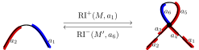
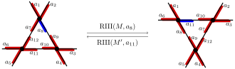
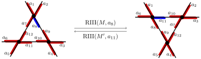

A Markov Chain Sampler
for Knot Diagrams
Colorado State University
University of British Columbia
Special Section on Mathematical Methods for the Study
of the Three Dimensional Structure of Biopolymers
AMS 2018 Fall Western Sectional Meeting
SFSU, San Francisco CA
October 28th 2018
Knot Diagrams
Crossings are the primary components of knot diagram models

Crossings as Self-contacts
Crossings may be viewed as self-contacts where enzymes may act to change DNA topology
Strand passage action, e.g. topo-IV

Coherent smoothing action, e.g. XerCD
Uniform Random Sampling
Direct sampling
No known algorithms for directly sampling knot diagrams uniformly
Related to lack of exact enumeration for knot diagrams
Uniform Random Sampling
Rejection sampling
Sample link diagrams uniformly, but only accept knot diagrams
Samples diagrams of specified size \(n\)
Distribution is exactly uniform across a size \(n\)
Knots are rare among links; most samples rejected
Knots of fixed type are themselves exponentially rare among all knots
Uniform Random Sampling
Monte Carlo sampling
Sample states from Markov process that explores knot diagrams
Samples diagrams of all possible sizes
Distribution limits on a uniform distribution and is approximately uniform across any given size
Only knot diagrams are sampled
Extends to sampling diagrams of any fixed type
Diagram Markov Chain
One step of the diagram Markov chain takes as input a knot diagram, performs with some probability a Reidemeister transition, and returns the resulting knot diagram
Ignore crossing signs: Explore all knot diagrams
Respect crossing signs: Explore all knot diagrams of fixed knot type
(c.f. BFACF and lattice polygons)
Reidemeister Transitions
 

Ergodicity
Acyclic as there is always a chance a transition fails
Positive recurrent as all valid transitions have nonzero probability and;
Alexander-Briggs, Reidemeister 1927
Any two knot diagrams of knot type \(K\) are related by a finite sequence of Reidemeister movesWang-Landau Transition Probabilities
Given a priori approximate enumeration data \(\{g_n\}\) so that \(g_n \approx k_n\), the number of \(n\)-crossing knot diagrams, for all \(n\):
Roughly, only perform transitions from \(n\)-crossing diagrams to \(m\) crossing diagrams with probability \(g_n/g_m\)
The approximate enumeration \(\{g_n\}\) can be calculated iteratively using the Markov process itself